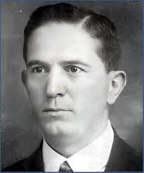
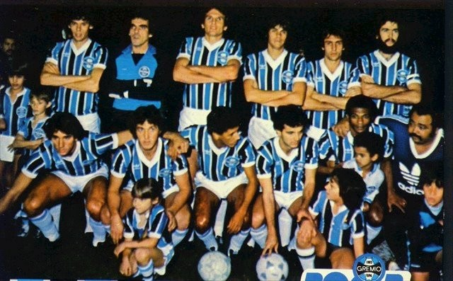
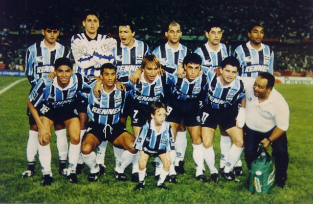
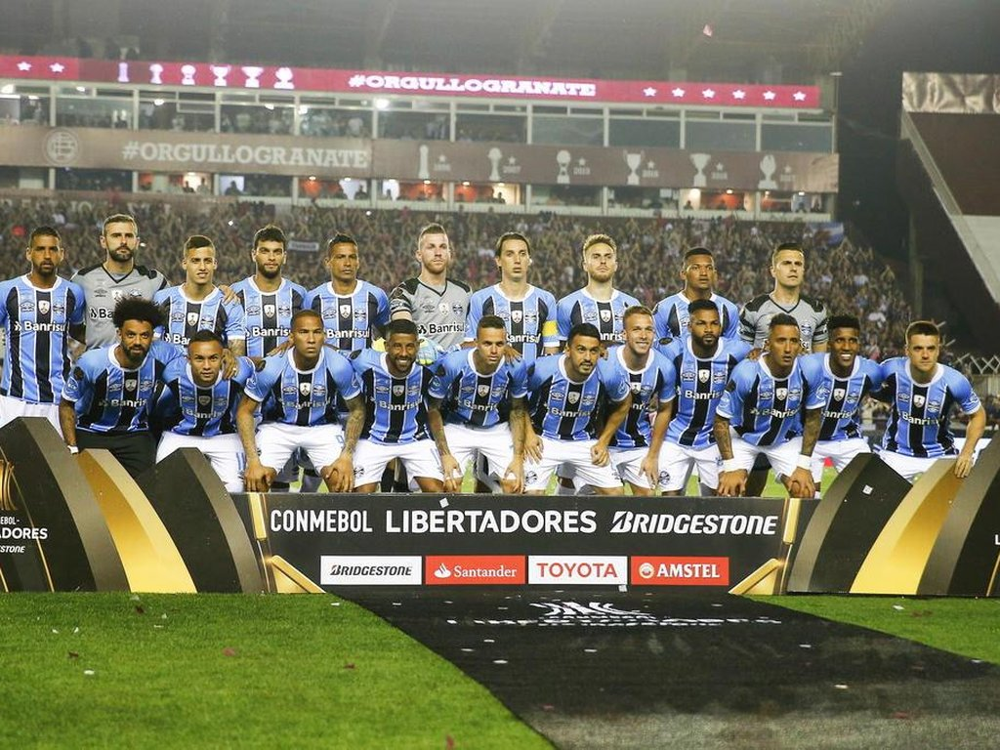
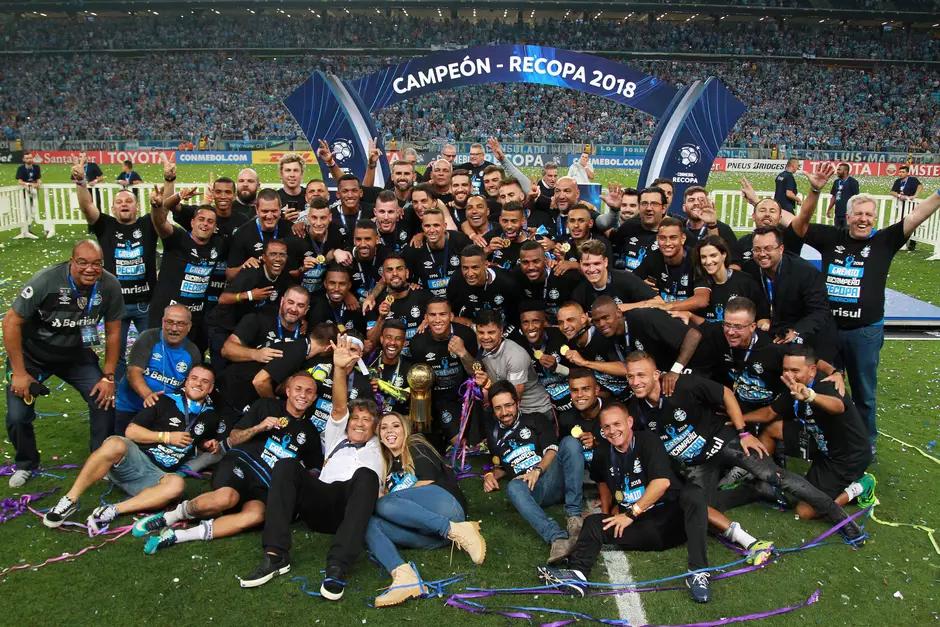

FUNDAÇÃO
A trajetória do Grêmio Foot-Ball Porto Alegrense começou de forma curiosa com o paulista Cândido Dias da
Silva, que trabalhava havia algum tempo em Porto Alegre. Nessa época, a equipe de futebol do Sport Clube
Rio Grande, composta por ingleses e alemães, foi convidada para uma partida de exibição na cidade. No
dia 7 de setembro de 1903, a partida atraiu muitos curiosos, e o campo estava rodeado de espectadores.
Cândido, com sua bola debaixo do braço, estava entre eles, atento e interessado.
Em dado momento, a bola dos ingleses esvaziou-se, para desapontamento geral. Cândido, mais do que
depressa, emprestou a sua, garantindo que a partida tivesse sua exibição até o final. Em troca, ao final
da partida, obteve dos jogadores as primeiras lições sobre futebol e, principalmente, ficou sabendo como
agir para fundar um clube.
Foi em 15 de setembro de 1903 que trinta e dois rapazes se reuniram no Salão Grau, um restaurante de um
hotel na Rua 15 de Novembro (atual Rua José Montauri), em Porto Alegre. Nesse encontro, eles deram
início à história do clube. Carlos Luiz Böhrer foi eleito o primeiro presidente, sem jamais imaginar a
projeção mundial que o recém-nascido clube alcançaria.

Carlos Luiz Böhrer
Mascotes
O Grêmio atualmente conta com dois mascotes: o famoso Mosqueteiro e, introduzido em 2023, o novo
mascote, o Flecha Negra.
Mosqueteiro 🤺
O mascote do Grêmio foi criado pelo chargista Pompeo no jornal Folha da Tarde em 1946,
simbolizando a união e a bravura de todos os gremistas em uma disputa. Ele também segue o espírito
da famosa frase do romance de Alexandre Dumas: “um por todos e todos por um” .

Flecha Negra 🏹
O novo mascote Flecha Negra é representado por Tarcíso, um dos maiores ídolos da história tricolor.
Ele jogou no Grêmio durante grande parte de sua carreira e até hoje é o jogador que mais atuou pelo
clube, com 723 partidas. Tarcíso também foi peça-chave nas conquistas da Libertadores de 1983 e do
Mundial, também em 1983. O apelido “Flecha Negra” foi dado a ele devido à sua velocidade
incomparável. O mascote foi criado em 2023 pelo ilustrador Caio Barbalho, morador de João Pessoa, na
Paraíba.

Quem tem mais, tem 3️⃣!
O Grêmio é um dos maiores campeões da Copa Libertadores no Brasil e na América, tendo conquistado o
título três vezes.
1983 🏆
O lendário time de 1983, vencedor da primeira Libertadores pelo Tricolor, contava com
Mazaropi, Paulo Roberto, Baidek, De León, P.C. Magalhães, China, Osvaldo, P.C. Lima, Renato, Mário
Sérgio e Tarciso. O técnico era Valdir Espinosa.

1995 🏆🏆
O lendário time responsável pelo bicampeonato da Libertadores do Tricolor contava com
Danrlei, Arce, Rivarola, Adilson, Roger, Dinho, Luís Carlos Goiano, Arílson, Carlos Miguel, Paulo
Nunes e Jardel. O técnico era Luiz Felipe Scolari (Felipão).

2017 🏆🏆🏆
O time de 2017 foi responsável pelo tricampeonato da Libertadores do Grêmio, um time
memorável, principalmente pela sua campanha no ano anterior como campeão da Copa do Brasil. A equipe
era composta por Marcelo Grohe, Edílson, Geromel, Kannemann, Cortez, Arthur, Jailson, Ramiro, Luan,
Fernandinho e Lucas Barrios, sendo comandada pelo técnico Renato Portaluppi, o mesmo campeão em
1983.

TÍTULOS 🏆
TÍTULOS INTERNACIONAIS 🏆
1949 - Copa El President de la Republica de Costa Rica - Costa Rica
1949 - Taça do Cinquentenário do Nacional (Troféu Sadrep) - Uruguai
1954 - Copa José Gonzalez Artigas - Equador
1961 - Troféu Internacional de Atenas - Grécia
1962 - Troféu Internacional de Salônica - Grécia
1968 - Taça Río de La Plata
1971 - Copa Internacional de Porto Alegre (Taça Prefeito Municipal)
1971 - Taça do Atlântico (Torneio Sul-Americano de Clubes Tricolores)
1972 - Taça Cidade de Salvador
1979 - Troféu Ciudad de Rosário - Argentina
1981 - Copa El Salvador del Mundo - El Salvador
1981 - Troféu Ciudad de Valladolid - Espanha
1981 - Troféu Torre del Vigia - Uruguai
1983 - Campeão Copa Libertadores da América
1983 - Campeão Mundial Interclubes - Japão
1983 - Copa Los Angeles - EUA
1983 - Troféu "CEL" - El Salvador
1985 - Copa Rotterdam - Holanda
1985 - Troféu Palma de Mallorca - Espanha
1986 - Copa Phillips - Holanda
1987 - Bicampeão da Copa Phillips - Suíça
1995 - Bicampeão da Copa Libertadores da América
1995 - Sanwa Bank Cup (Copa da Amizade Brasil-Japão) - Japão
1996 - Copa Renner (Torneio Internacional de Verão)
1996 - Recopa Sul-Americana - Japão
1996 - Troféu Agrupación Peñas Valencianas - Espanha
1997 - Troféu Colombino - Espanha
1998 - Copa Ano Novo 98 - Pepsi Cola - China
1998 - Taça Hang Ching - China
2010 - Troféu Fronteira da Paz - Uruguai
2017 - Tricampeão da Copa Libertadores da América
2018 - Bicampeão da Recopa Sul-Americana

2018 - Bicampeão da Recopa Sul-Americana
TÍTULOS NACIONAIS 🏆
1981 - Campeão Brasileiro
1989 - Campeão Invicto da Copa do Brasil
1990 - Supercampeão do Brasil
1994 - Bicampeão Invicto da Copa do Brasil
1996 - Bicampeão Brasileiro
1997 - Tricampeão Invicto da Copa do Brasil
2001 - Tetracampeão da Copa do Brasil
2005 - Campeão Brasileiro Série B
2016 - Pentacampeão da Copa do Brasil

2018 - Bicampeão da Recopa Sul-Americana
TÍTULOS INTERESTADUAIS 🏆
1935 - Taça General Flores da Cunha
1940 - Taça Columbia Pictures
1949 - Taça Correio do Povo
1960 - Copa Tancredo Neves
1962 - Campeão Sul-Brasileiro (Taça da Legalidade)
1970 - Taça Petrobrás
1970 - Troféu Domingos Garcia Filho (Torneio Interestadual de Goiânia)
1971 - Taça Presidente Médici
1999 - Campeão da Copa Sul-Brasileira

1999 - Campeão da Copa Sul-Brasileira
TÍTULOS ESTADUAIS E MUNICIPAIS 🏆
1911 - Campeão da Cidade de Porto Alegre
1912 - Campeão da Cidade de Porto Alegre
1913 - Campeão da Cidade de Porto Alegre
1914 - Campeão da Cidade de Porto Alegre
1915 - Campeão da Cidade de Porto Alegre
1919 - Campeão da Cidade de Porto Alegre
1920 - Campeão da Cidade de Porto Alegre
1921 - Campeão da Cidade de Porto Alegre
1921 - Campeão Gaúcho
1922 - Campeão da Cidade de Porto Alegre
1922 - Campeão Gaúcho
1923 - Campeão da Cidade de Porto Alegre
1925 - Campeão da Cidade de Porto Alegre
1926 - Campeão da Cidade de Porto Alegre
1926 - Campeão Gaúcho
1930 - Campeão da Cidade de Porto Alegre
1931 - Campeão da Cidade de Porto Alegre
1931 - Campeão Gaúcho
1932 - Campeão da Cidade de Porto Alegre
1932 - Campeão Gaúcho
1933 - Campeão da Cidade de Porto Alegre
1935 - Campeão da Cidade de Porto Alegre
1937 - Campeão da Cidade de Porto Alegre
1938 - Campeão da Cidade de Porto Alegre
1939 - Campeão da Cidade de Porto Alegre
1946 - Campeão da Cidade de Porto Alegre
1946 - Campeão Gaúcho
1949 - Campeão da Cidade de Porto Alegre
1949 - Campeão Gaúcho
1956 - Campeão da Cidade de Porto Alegre
1956 - Campeão Gaúcho
1957 - Campeão da Cidade de Porto Alegre
1957 - Campeão Gaúcho
1958 - Campeão da Cidade de Porto Alegre
1958 - Campeão Gaúcho
1959 - Campeão da Cidade de Porto Alegre
1959 - Campeão Gaúcho
1960 - Campeão da Cidade de Porto Alegre
1960 - Campeão Gaúcho
1962 - Campeão Gaúcho
1963 - Campeão Gaúcho
1964 - Campeão da Cidade de Porto Alegre
1964 - Campeão Gaúcho
1965 - Campeão da Cidade de Porto Alegre
1965 - Campeão Gaúcho
1966 - Campeão Gaúcho
1967 - Campeão Gaúcho
1968 - Campeão Gaúcho
1977 - Campeão Gaúcho
1979 - Campeão Gaúcho
1980 - Campeão Gaúcho
1985 - Campeão Gaúcho
1986 - Campeão Gaúcho
1987 - Campeão Gaúcho
1988 - Campeão Gaúcho
1989 - Campeão Gaúcho
1990 - Campeão Gaúcho
1993 - Campeão Gaúcho
1995 - Campeão Gaúcho
1996 - Campeão Gaúcho
1999 - Campeão Gaúcho
2001 - Campeão Gaúcho
2006 - Campeão da Copa FGF (Taça RS)
2006 - Campeão Gaúcho
2007 - Campeão Gaúcho
2010 - Campeão da Taça Fernando Carvalho (1º turno do Campeonato Gaúcho)
2010 - Campeão Gaúcho
2011 - Campeão da Taça Piratini (1º turno do Campeonato Gaúcho)
2018 - Campeão Gaúcho
2019 - Campeão da Recopa Gaúcha
2019 - Campeão Gaúcho
2020 - Campeão Gaúcho
2021 - Campeão da Recopa Gaúcha
2021 - Campeão Gaúcho
2022 - Campeão da Recopa Gaúcha
2022 - Campeão Gaúcho
2023 - Campeão da Recopa Gaúcha
2023 - Campeão Gaúcho
2024 - Campeão Gaúcho

2024 - Campeão Gaúcho
TÍTULOS REGIONAIS E MUNICIPAIS 🏆
1904 - Taça Vereinpreis
1904 - Taça Vereinpreis (2ª edição)
1904 - Taça Wanderpreis
1905 - Campeão da Cidade
1905 - Taça Vereinpreis
1905 - Taça Wanderpreis
1905 - Taça Wanderpreis (2ª edição)
1906 - Campeão da Cidade
1906 - Taça Wanderpreis (2ª edição)
1907 - Taça Wanderpreis II
1909 - Campeão da Cidade
1909 - Taça Sportiva
1910 - Taça Wanderpreis II
1911 - Taça Wanderpreis II
1912 - Taça Wanderpreis II
1913 - Taça Wanderpreis III
1914 - Taça Rio Branco
1915 - Taça Rio Branco
1916 - Taça Rio Branco
1922 - Torneio Início de Porto Alegre
1923 - Taça Associação dos Varejistas
1924 - Taça Associação dos Varejistas
1924 - Taça São Pedro
1926 - Torneio F.C. Porto Alegre
1926 - Torneio Início de Porto Alegre
1926 - Torneio Washington Luis
1927 - Torneio Início de Porto Alegre
1928 - Torneio Congraçamento (Taça Fernando Caldas)
1929 - Taça Reivindicação
1929 - Torneio Início de Porto Alegre
1931 - Torneio de Encerramento de Porto Alegre (Noturno Porto Alegrense)
1931 - Torneio Início de Porto Alegre
1932 - Taça Dia do Desporto
1933 - Taça Dia do Cronista
1933 - Torneio de Encerramento de Porto Alegre (Noturno Porto Alegrense)
1934 - Taça Flores da Cunha
1935 - Torneio "Benefício da FRGD"
1936 - Taça Martel
1937 - Taça Martel
1937 - Torneio Início de Porto Alegre
1938 - Taça Café Nacional
1938 - Taça Dia do Filiado
1938 - Taça José Loureiro da Silva - "Supercampeonato Porto Alegrense"
1938 - Torneio de Encerramento de Porto Alegre (Noturno Porto Alegrense)
1939 - Torneio Início de Porto Alegre
1940 - Torneio Taça de Portugal
1942 - Taça Cambial
1943 - Taça Cambial
1943 - Taça Ernesto Dorneles
1944 - Taça Dia do Cronista
1945 - Taça Dia do Futebol
1946 - Taça Casa Sport
1946 - Taça General Corrêa Lima
1946 - Torneio Início de Porto Alegre
1948 - Campeão da Taça Cidade de Porto Alegre
1948 - Campeão do Campeonato Extra de Porto Alegre
1949 - Campeão do Campeonato Extra de Porto Alegre
1950 - Taça Manuel Amorim Albuquerque
1952 - Taça Rádio Gaúcha
1955 - Copa Farroupilha 120 anos (Dia do Cronista - Taça Bento Gonçalves)
1956 - Taça Dia do Cronista
1958 - Torneio Início de Porto Alegre
1960 - Taça Dia do Cronista
1961 - Taça Dia do Cronista
1962 - Taça Dia do Cronista
1962 - Taça Refinaria Ipiranga
1962 - Troféu Wallig
1963 - Torneio Início Estadual
1965 - Torneio Festa da Uva em Caxias
1965 - Torneio Início Estadual
1967 - Torneio Início Estadual
1968 - Taça Dia do Cronista
1985 - Troféu Sesquicentenário da Revolução Farroupilha
1988 - Taça RBS TV 25 Anos
1995 - Copa Solidariedade (Campanha do Agasalho)
1996 - Taça Cidade de Porto Alegre (Campanha do Agasalho)
2010 - Taça Rádio Pelotense 85 anos
2014 - Taça 80 anos Rádio Bandeirantes
2017 - Taça 90 anos da Rádio Gaúcha
2019 - 100 anos do Gauchão
2019 - Taça HPS 75 anos

2019 - Taça HPS 75 anos